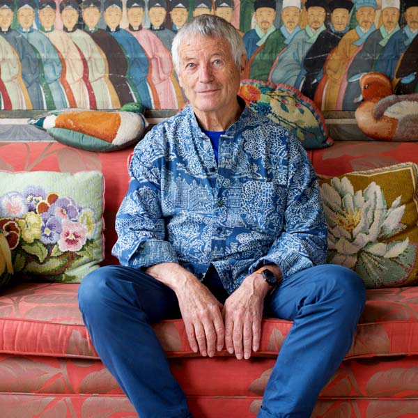
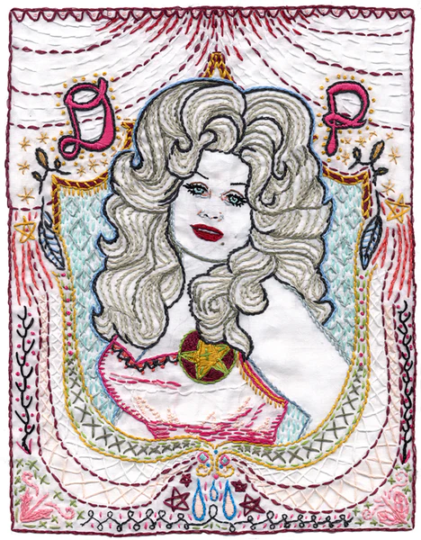

Hat Sanatları
Hat sanatları, kumaş üzerine yapılan çeşitli işlemleri kapsayan bir sanat dalıdır. Bu işlemler arasında dokuma, örme, dikiş, nakış, boyama, bordür, patchwork, quilting gibi teknikler yer alır.
Dokuma, kumaşın yapımında kullanılan ipliklerin bir araya getirilmesi işlemidir. Dokuma için çeşitli dokuma makineleri ve tezgahları kullanılır. Örgü ipliği, pamuk, yün, keten, ipek gibi malzemeler kullanılarak örülen kumaşlar da dokuma tekniği olarak kabul edilir.
Örme, ipliklerin elle ya da makine ile kumaşa düzenli aralıklarla işlenmesi işlemidir. Örme tekniği ile yapılan kumaşlar genellikle yumuşak ve esnektir. Örme için örgü ipliği, iğne gibi araçlar kullanılır.
Dikiş, ipliklerin kumaş üzerine geçirilmesi ve birbirine bağlanması işlemidir. Dikiş tekniği ile yapılan kumaşlar güçlü ve sağlamdır. Dikiş için iplik, iğne, dikiş makinesi gibi araçlar kullanılır.
Nakış, ipliklerin kumaş üzerine düzenli aralıklarla işlenmesi işlemidir. Nakış tekniği ile yapılan kumaşlar zengin ve süslüdür. Nakış için nakış ipliği, nakış iğnesi gibi araçlar kullanılır.
Boyama, kumaş üzerine renklerin uygulanması işlemidir. Boyama tekniği ile yapılan kumaşlar renkli ve canlıdır. Boyama için boya, fırça, spatula gibi araçlar kullanılır.
Bordür, kumaş üzerine süslemelerin yapılması işlemidir. Bordür tekniği ile yapılan kumaşlar süslü ve zengindir. Bordür için bordür ipliği, bordür iğnesi gibi araçlar kullanılır.
Sanatçılar ve Eserleri

Sanatçı: Kaffe Fassett
Kimdir ?
Kaffe Fassett, 1940 yılında San Fransisco, California'da doğmuş bir ressam, tekstil sanatçısı ve tasarımcıdır. Özellikle renkler ve desenler konusunda uzmanlaşmıştır. Kaffe Fassett, 1960'larda Londra'da yaşayan ve çalışan bir sanatçı olarak ün kazandı.
Özellikle quilting, dokuma ve nakış tekniklerinde uzmanlaşmıştır. Aynı zamanda moda tasarımı, iç mimari ve resim gibi alanlarda da çalışmıştır. Kaffe Fassett, birçok kitap ve televizyon programında sanatını tanıtmıştır. Kaffe Fassett, hat sanatları alanında öncü bir sanatçı
olarak kabul edilir.
Sanat Eseri: "Quilt Grandeur"
Kaffe Fassett, hat sanatları alanında öncü bir sanatçı olarak bilinir. "Quilt Grandeur" adlı eseri, çeşitli renkler ve desenlerin harika bir şekilde bir araya getirildiği bir quilting işlemi ile oluşmuştur. Bu eser, Fassett'in özellikle renkler konusunda ustalığını gösterir.

Sanatçı: Jenny Hart
Kimdir ?
Jenny Hart, Amerikalı bir sanatçı ve tasarımcıdır. Özellikle nakış tekniği ile ünlüdür. Nakış, kumaş üzerine düzenli aralıklarla işlenen iplikleri kullanır. Jenny Hart, nakış işlemi ile yapılmış kumaşlar, giysiler, ev eşyaları ve aksesuarlar tasarlamıştır. Aynı zamanda kendi adını taşıyan bir nakış iplikleri markası ve bir e-kitap yayıncılık şirketi de işletmektedir. Jenny Hart, nakış tekniği ile yapılan eserleri ile özellikle moda ve ev tekstili alanlarında öncü bir sanatçı olarak bilinir.
Sanat Eseri: "Sublime Stitching"
Jenny Hart, hat sanatları alanında özellikle nakış tekniği ile ünlü bir sanatçıdır. "Sublime Stitching" adlı eseri, nakış işlemi ile yapılmış bir kumaş parçasıdır. Eski moda tarzda süslemeler ve desenlerin kullanıldığı bu eser, Hart'ın nakış ustalığını gösterir.